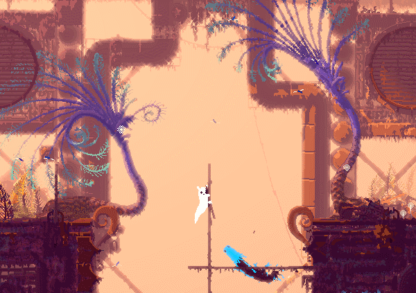
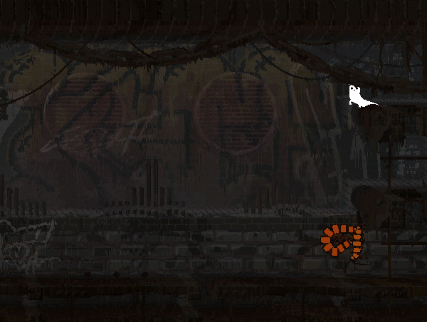

大概一年多以前，我在Steam商店上无意间发现了这款原价68的游戏。打五折购入时只花了34块钱。
在还没有正式开始游戏之前我便对它有了很深的好感。
Rain World的开发组名叫Videocult，这是一个只有4个人的独立工作室。整个游戏制作过程中，除了音乐、音效以外，其余部分均由 乔尔·雅各布森(Joar Jakobsson) 一人完成。

游戏故事讲述的是一个叫“Slagcat”（蛞蝓猫）的生物努力在灰暗的工业世界中生存的故事。在游戏中，玩家将扮演这个生物（国内玩家似乎比较喜欢称呼它为鼻涕虫或者鼻涕猫）。它因为洪水与家人失散，在这个充满危机的世界里，需要克服重重困难才能生存下来，这些困难包括捕猎食物、逃脱追猎者的抓捕以及躲避大雨。
随着游戏的进展，玩家需要进入古代文明废墟中探索，发现全新的地区，最后游戏目标是在死亡来临之前与家人团聚。虽然听起来很悲伤，但游戏音乐和画面却都非常优美动人。
Joar Jakobsson本是设计师出身，后来自学编程并担任起了这款游戏的开发。在此之前，Joar Jakobsson并没有玩过太多其他游戏，因此他缺少许多行业经验。但也正是这个原因，让他摆脱了游戏行业中非常多的传统观念，也让这款游戏中有了非常多的出色的设计。
我们可以将它与另一款非常热门的生存游戏Minecraft来对比：在Minecraft中，所有的生物都会按照设定的代码进行活动，一些生物根据玩家的反应而做出反应、怪物永远只会刷新在玩家周围。
Rain World里的生物不一样，在Rain World中，它们不是为了阻碍玩家而存在的。这些生物被设计出来，只为了自己的存在而存在。换句话说，这些生物与我们的主角一样，天黑回家睡觉躲避洪灾，天亮出门寻觅食物。它们把你抓住了并吃掉，就像你把那些更弱小的生物抓住并吃掉一样。
出于这个原因，整个游戏的流程没有背板与套路可言。对于每一个新的一天而言，你完全无法预测你的敌人在那里，你也无法预料到他们将要做什么。
重要的一点是，即使你看不见的时候，它们也在活动。你进入了一个场景，看到两条蜥蜴在撕斗，但他们绝不是在你进入场景时才刷新在这里并开始互殴的。也许这场打斗已经持续了二十多分钟，而你只是刚好路过看见了而已。

除此之外，这个游戏的难度非常大。作为主角的鼻涕猫是游戏中食物链的底端，地上跑的、水里游的、天上飞的，几乎所有生物（甚至是某些植物）都将主角视为食物。你能够使用一些简单的武器，比如说碎石、木棍。但是这些武器都是一次性使用的，你只能够在捡起来之后将他们投掷出去并祈祷他们能够砸中你的敌人。尽管如此，你还是很难杀死他们，因为主角的力量实在是太弱了（我试验了一会儿，花了十几分钟都没砸死一头蜥蜴），反倒是主角的死亡，经常是一个弱小者在无法逃离一个（或一群）力量远远强于自身的敌人之后的必然结果。不过也不必因此而感到恐慌，实际上在大多数捕食者将你抓到手上时，虽然以你弱小的力量很难做到，但只要环境足够复杂且混乱，你仍然还是有机会尝试挣脱的。比如说两三只生物同时争夺你时，你被其中一只抓到手上了，然后这只生物被其他生物攻击而放开了手，此时你就可以抓住机会趁机溜走。
（有一次，我好像欺负了某个蚊子家族的小蚊子，然后被她妈妈追着满地图跑
（我靠！那个蚊子的口器又长又硬，还tm会咸鱼突刺。
（这b好像原本不吃鼻涕猫的，只是因为我把她孩子吃了，他就要用那个口器来戳我
（↑我被这个蚊子戳死了好几次
（↑我也不想吃他的孩子啊，可是我肚子饿啊。我不吃我就得饿死了啊
在整个游戏过程中，你很少有机会能够杀死你的天敌。因此大多数情况下你应该考虑潜行和逃避，或者引诱你天敌的天敌来消灭你的天敌，但这个方法是极其危险的，因为游戏中几乎所有生物都会捕食鼻涕猫，你很有可能在引诱的过程中被双方捕食。

没错，大多数这种游戏的主角通常都是这样，一开始弱的一批，你的敌人也同样弱的一批。直到后面打赢了某个boss，又或者解锁了某些条件，主角才会慢慢变强，学习诸多技能，获得各种能力，然后再面对更强的敌人。（比如ori和空洞骑士）
在Rain World中这些都不存在。鼻涕猫就是鼻涕猫，无论你吃了多少肉，获得了多少业力点，你仍然改变不了自己处于食物链底端的事实。你不会变得更强，但你的敌人却会随着地图的推进变得种类繁多。
这就是残酷的生态系统，即使你每一天都在努力地活着，也仍然改变不了你终有一日要成为别人口中餐的事实。毕竟，其他的生物也在努力地生存啊
若你想要通关这个游戏，那么你就必须适应这个生态系统。不要妄想让环境适应你，你必须让自己去适应环境，不适应的话就会被淘汰，就会被吃掉。直到你吸取了足够多的教训之后发现，一些敌人无法进入水下，另一些敌人没有视觉（只能靠听觉捕猎）等等。等到你真正了解了这些生物，你就适应了这个生态系统，然后再在面对不同的敌人时你就可以游刃有余地应对他们。现在我们看到地球上的一些生态系统，捕食者与被捕食者之间的竞争也是这样，弱小的种族只能依靠自己的经验与运气来让自己生存下去。那些又笨又没气力打不过人家又不知道躲避危险的家伙，早该灭绝了。（除非他们的肉不好吃）

每当你在一天中寻找了足够多的事物时，你就可以选择睡觉来提升业力值，这样你就可以进入某些需要业力值达到一定水平才能进入的区域。
可是主角不仅不会变强，这个游戏的死亡惩罚还会让你在每次死亡后损失积攒的业力值。虽然你仍然可以在当天的清晨复活，但是当你复活之后，你不仅仅要去重新获取到今天已经获取到的资源（由于游戏敌人完全随机，每次重生后敌人的数量、行为和位置也会不同），你还会损失昨天休眠恢复的那点业力值。
正因为这一个过于严苛的死亡惩罚，让许多游戏机构的评测员痛苦不堪。这些游戏机构的评测员在发布一篇游戏评测之前，必须要对游戏有一个全面的了解，因此他们必须至少游玩到游戏一半的旅程。但是一些评测员经常因为偶尔的失误操作而导致自己损失了几个小时的游戏内容，因此感觉十分沮丧。
对于只狼和黑暗之魂这种同样是难度极高的游戏，玩家们同样也会在死亡后感觉沮丧。但不一样的是，这些游戏里每一处难点都是有章可循的。boss出招全部都是固定的套路，只要你尝试足够多的次数，不断地从失败中吸取教训（再配上那么一点点决心和运气），你总能击败你的对手。而且往往在每一次击败boss后玩家都会得到巨大的回报（游戏内容和玩家心理激励）。
在Rain World中，这些都不存在，死亡只会给你带来痛苦和损失，而顺利得通过了某个区域、吃饱喝足睡了一觉，只是你原本就该实现的目的而已，除了游戏进程向前推进以外，你没有得到其他任何回报。
因此，很多评测都在这一方面批评了Rain World：
Rain World，雨之世界，他代表了雅各布森对于一部生存游戏的全部定义和构想。遗憾的是，雅各布森对于AI和整个世界的建造过于重视，却没有在游戏性的趣味上花费多少心思，这使得游戏的内容缺乏基本的深度；另一方面，不合理的难度和无法预知的AI也是一种失败的尝试。他把“生存”这两个字做了出来，却唯独忘了后面的“游戏”；他明白生存的真实，却忽略了游戏的虚假。
说白了，Rain World既然作为游戏，那就一定要有游戏的定义：以直接获得快感为主要目的，且必须有主体参与互动的活动。
也就是说：如果这款游戏无法给你带来足够多的快乐、甚至让你感到沮丧和愤怒时，对你而言它就不是一个合格的游戏。
但Rain World更像是一件艺术品，描绘了一个类似于末世的场景。这是开发人员的意图，他们希望玩家感到自己像住在地铁上的老鼠，在其中他们学习如何在环境中生存，却不能掌握地铁更高级别的功能。
当你将它视为艺术品，去仔细感受这片作者花了三年构建的生态系统时，若你能够体会到其中的奥妙，并享受这种感觉时。Rain World将在另一个层面上让你感到愉快。
相关内容
http://www.chuapp.com/article/282023.html
https://indienova.com/indie-game-review/rain-world/
B站视频: 游戏设计思路
官方wiki
维基百科
游戏地图